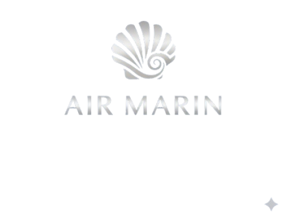

A Air Marin nasceu do encontro entre a paixão pelo mar e o desejo de criar uma moda que celebra a liberdade, a elegância e a beleza natural da mulher. Inspirada pelas paisagens tropicais, pelos tons do pôr do sol e pelo som das ondas, a marca surgiu como uma extensão do lifestyle de quem vive o verão como estado de espírito. Criada por mulheres que acreditam que o bem-estar começa na forma como nos vestimos, a Air Marin foi pensada para traduzir a leveza da brisa do mar em peças que abraçam o corpo com conforto e sofisticação. Cada detalhe carrega um propósito: desde o toque dos tecidos até as estampas exclusivas que contam histórias de destinos, sensações e liberdade. Mais do que moda praia, somos uma marca que veste momentos. Do amanhecer à beira-mar aos fins de tarde com os pés na areia, acreditamos em roupas que acompanham a mulher em todos os seus movimentos – com autenticidade, consciência e alma tropical. Seja bem-vinda ao universo Air Marin. Aqui, o verão é eterno. 🌊
Inspirar liberdade, elegância e autenticidade através de roupas de praia que conectam estilo e bem-estar à energia do mar. A Air Marin existe para valorizar a beleza natural, o conforto e a autoexpressão de quem vive o verão o ano inteiro.
Ser referência nacional e internacional em moda praia premium, reconhecida pela qualidade, design exclusivo e por traduzir o lifestyle tropical contemporâneo em cada peça.